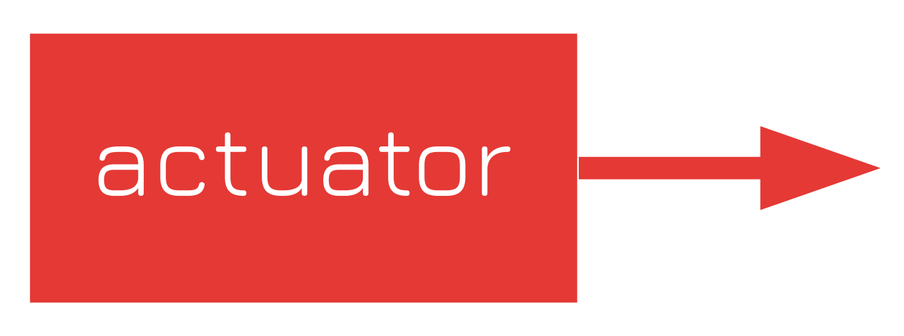
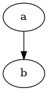
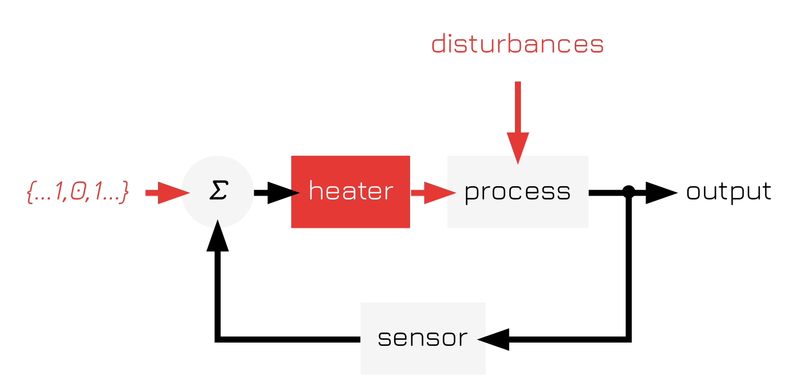

Control Block Diagram Syntax
Table of Contents
Introduction
Control diagrams are a useful tool for representing control systems. However, there doesn't appear to be any standard for syntax highlighting . Therefore, I have decided to come up with a little syntax highlighting document of sorts, as well as a standardized
Nodes
- actuators
red and in boxes

- inputs and disturbances
- Inputs and disturbances are indicated with red font that describes the input or disturbance 1 Disturbances may be simply labeled 'disturbances'. on a white background. Similarly to actuators these are to indicate action
- summing / product points
Summing points and other similar regions (where multiple signals are added together) should be indicated with a \(\Sigma\) in a circle rather than a circle. Likewise, if an alternative function is being used, such as multiplication, use the \(\Pi\) symbol to indicate a product.
Likewise, other similar, simple functions with multiple inputs can be drawn similarly.

- comparators
- For certain electric circuts
- bang-bang controllers
- Bang-bang controllers are indicated with a simple bang-bang controller symbol alongside the threshold values to transfer between the two states.
Edges
- actuator and input edges
- red, similarly to actuators, to indicate action
Process Nodes
Process nodes are
Text
This is a collection of .
- variable names
- italics
- function names
- bolded italics
- transfer functions
- regular font
Along with color schemes, the font choices also impact the control diagram. Names in italics are to be taken as variable names, whereas names in bolded italics are function names.
Example Diagrams
Thermostat
digraph feedback { splines=ortho; size="15,15!"; fontpath="~/.local/share/fonts"; node[shape=record, fontname="Jura" penwidth=0, style=filled, fillcolor="#f5f5f5"]; edge[penwidth=3]; { node[fillcolor=white, fontcolor="#e53935"]; disturbances; sp[label="\{...1,0,1...\}", fontname="Jura Italic"]; } out[fillcolor=white, label="output"]; conn[shape=point, fillcolor="#000000" penwidth=3]; comp[shape=circle, label="Σ", fontname="Jura Italic Bold"]; actuator[fillcolor="#e53935", fontcolor=white, label="heater"]; { rank=min; disturbances} { rank=same; sp->comp[color="#E53935"] comp->actuator actuator->process[color="#e53935"] process -> conn [arrowhead=none] conn -> out } { rank=max; sensor; } disturbances-> process[color="#e53935"] conn->sensor sensor->comp }
Here we define a simple thermostat with a set point that
